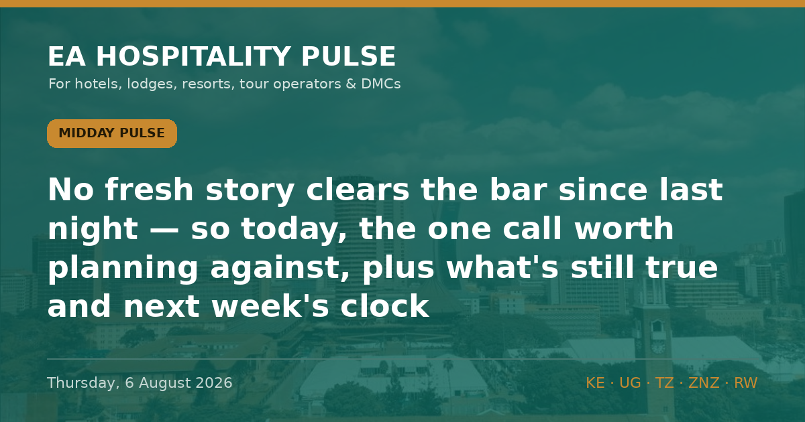

← All editionsNo fresh story clears the bar since last night — so today, the one call worth planning against, plus what's still t.
No fresh story clears the bar since last night — so today, the one call worth planning against, plus what's still true and next week's clock.
━━━━━━━━━
⏳ FORECAST CHECK-IN: SIX DAYS TO THE 12 AUGUST CALL
The US CDC's Section 362 Ebola entry suspension — covering DR Congo, Uganda and South Sudan — was renewed on 13 July "for 30 days" (CDC Port Health order, page dated 20 July). That runs out around 12 August. Our standing calls into that decision:
• Renewed, DRC still listed. The outbreak isn't easing — 3,605 confirmed cases and 1,587 deaths in DRC as at 30 July, a 44% fatality rate, with the single worst week on record (per WHO, via UN News, 3 Aug). No epidemiological basis to lift.
• Uganda is the open question. Kampala declared its own outbreak over on 28 July, but whether Washington decouples Uganda from DRC — or keeps it on the list — is still undecided.
🎯 So what: if you sell Uganda or the region into the US market, don't bank on an entry-ban or advisory easing before late August. The realistic Ugandan catalyst is the ~27 Aug 42-day all-clear, not next week. Hold rate; don't model a September US-market bounce on a decoupling that may not land.
🏷 All | Regional | Reported
📋 STILL TRUE: NO ADVISORY MOVED THIS WEEK
Uganda US Level 4 / UK against all-but-essential travel to parts of the west; Kenya Level 2 (rendered page still dated 17 March 2025); Tanzania & Zanzibar Level 3; Rwanda Level 3. Last verified 4 Aug; no advisory-page change flagged since.
🎯 So what: a confirmed "no change" is actionable — no board has moved against you this week, so there's no reason to discount defensively into the Sept–Oct peak.
• 7 Aug (Fri) — CBK weekly bulletin: FX & reserves.
• ~12 Aug — CDC Ebola entry-ban renewal decision.
• 15 Aug — EPRA fuel review (Nairobi diesel KSh 222.86/L, held flat by state support). Lock safari transfer contracts before it.
• 18 Aug — WHO IHR Emergency Committee reconvenes on the Bundibugyo PHEIC.
🏷 All | Regional | Watch
━━━━━━━━━
🔗 This edition on the web: https://eahospitalitypulse.com/editions/pulse-2026-08-06-midday.html
— EA Hospitality Pulse | Daily intelligence for city, bush & beach properties
📣 Telegram (full editions) 💬 WhatsApp (daily skim) 💼 LinkedIn (the Big Read) 🗂 Every edition